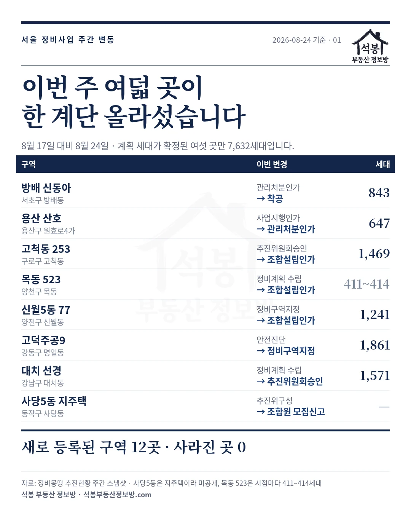
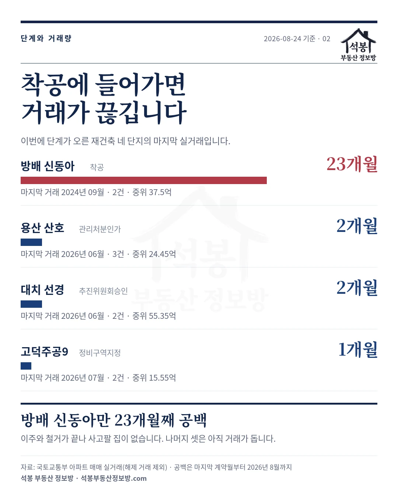
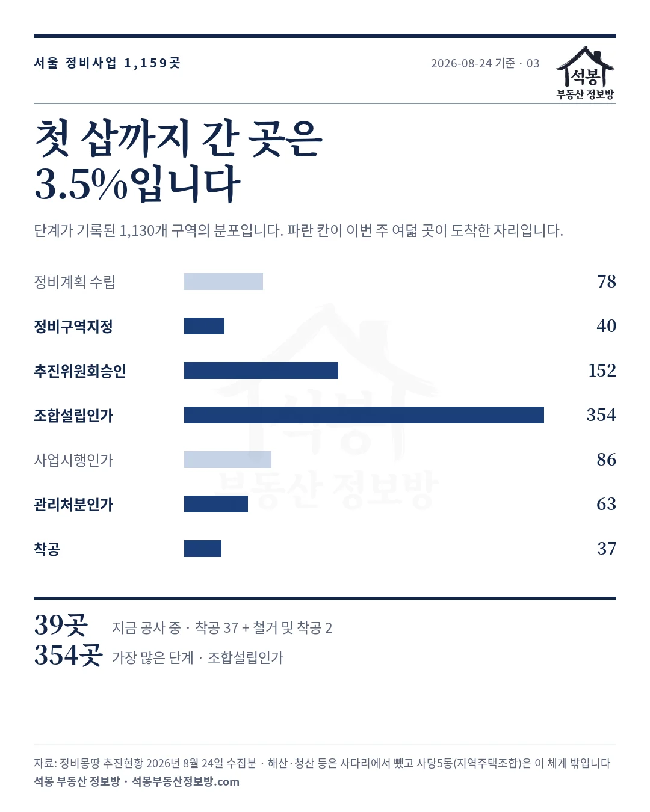
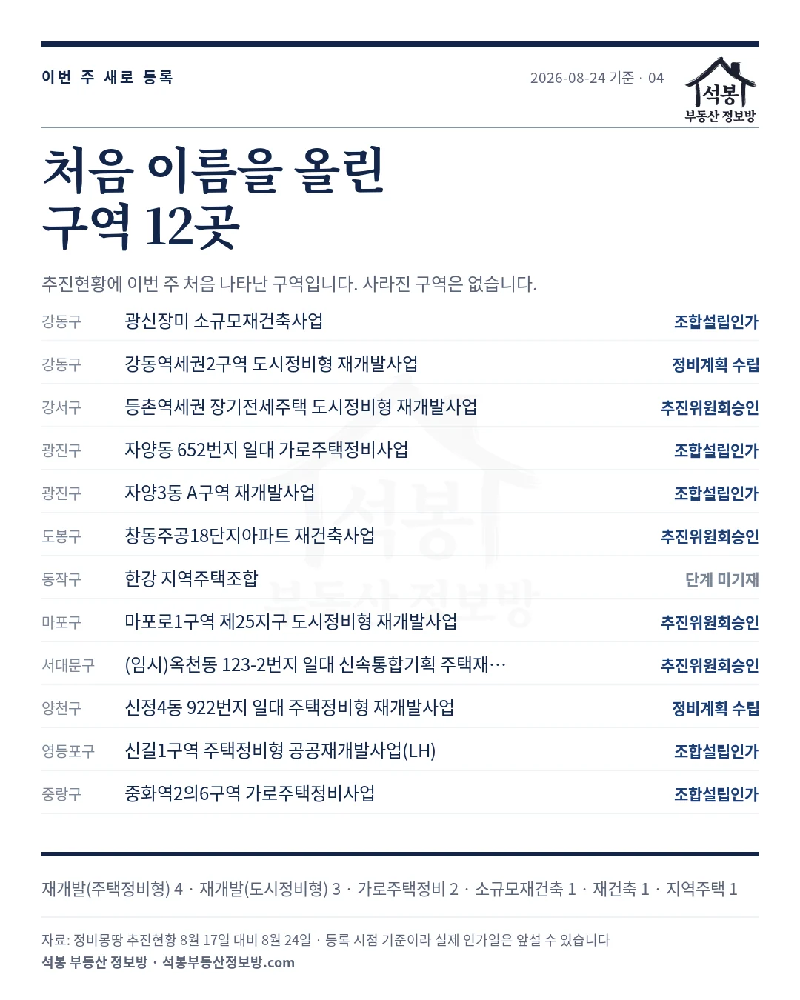

저희는 서울시 정비사업 추진현황을 매주 월요일에 통째로 내려받아 한 주 전 것과 맞춰 봅니다. 이번 주(2026년 8월 17일 대비 8월 24일)에 단계가 오른 곳이 여덟, 새로 이름을 올린 곳이 열둘이고 사라진 곳은 없었습니다. 여덟 곳 중 계획 세대가 확정된 여섯 곳만 합쳐 7,632세대입니다. 어디가 어떻게 움직였는지 하나씩 보겠습니다.
하나. 여덟 곳을 한눈에
| 구역 | 위치 | 이번 변경 | 계획 세대 |
|---|---|---|---|
| 방배 신동아 | 서초구 방배동 | 관리처분인가 → 착공 | 843 |
| 용산 산호 | 용산구 원효로4가 | 사업시행인가 → 관리처분인가 | 647 |
| 고척동 253 | 구로구 고척동 | 추진위원회승인 → 조합설립인가 | 1,469 |
| 목동 523 | 양천구 목동 | 정비계획 수립 → 조합설립인가 | 411~414 |
| 신월5동 77 | 양천구 신월동 | 정비구역지정 → 조합설립인가 | 1,241 |
| 고덕주공9 | 강동구 명일동 | 안전진단 → 정비구역지정 | 1,861 |
| 대치 선경 | 강남구 대치동 | 정비계획 수립 → 추진위원회승인 | 1,571 |
| 사당5동 지주택 | 동작구 사당동 | 추진위구성 → 조합원 모집신고 | 미공개 |

가입하시면 지역 시장조사 보고서(약식)를 2회 무료로 요청하실 수 있습니다.
둘. 첫 삽을 뜬 방배 신동아
방배 신동아가 관리처분인가에서 착공으로 넘어갔습니다. 1981년에 지어진 단지가 최고 35층 843세대(임대 109세대 포함)로 다시 올라갑니다. 새 이름은 「오티에르 방배」이고, 착공식은 2026년 7월 16일에 열렸습니다.
여기서 저희 실거래를 하나 보태겠습니다. 이 단지의 마지막 매매 신고는 2024년 9월입니다. 그때 두 건이 중위 37.5억에 거래됐고 그 뒤로 23개월째 한 건도 없습니다.
자료가 빠진 게 아니라 팔 집이 없는 겁니다. 착공에 들어가려면 이주와 철거가 끝나 있어야 하니까요. 「이 단지 시세가 얼마냐」는 질문에 답이 안 나오는 구간이 여기서 시작됩니다.

셋. 관리처분까지 온 용산 산호
산호아파트는 1977년 준공된 한강변 단지입니다. 최고 35층 647가구로 바뀌고 시공사는 롯데건설, 새 이름은 「용산 루엘」로 정해졌습니다.
용산구는 2026년 8월 14일 관리처분계획인가를 고시했습니다. 2024년 3월 사업시행계획인가 뒤 시공사 선정이 지연됐다가, 2025년 2월 감정평가업자 선정부터 1년 6개월 만에 여기까지 왔습니다. 서울시 신속통합기획 표준 처리기간이 1년 9개월이니 석 달 빠릅니다.
이 단지는 아직 거래가 돕니다. 2026년 6월에 세 건이 중위 24.45억에 신고됐고 최근 3개월 평당은 10,354만원(전용)입니다. 같은 기간 원효로4가 전체 중위가 평당 8,637만원이니 20%쯤 높습니다. 다만 이게 정비사업의 일반 법칙은 아닙니다. 바로 뒤에 나올 고덕주공9는 반대입니다.
넷. 조합이 만들어진 세 곳
고척동 253번지 (구로구 · 1,469세대)
고척동 253번지 일대는 신속통합기획 구역입니다. 노후 저층 주거지가 최고 29층 18개 동 1,469세대(임대 239세대)로 바뀝니다. 2024년 12월 정비구역 지정안이 수정가결됐고 이번에 조합이 섰습니다. 최근 3개월 고척동 실거래는 100건, 평당 3,016만원(전용)입니다.
목동 523번지 (양천구 · 411~414세대)
9호선 염창역 옆 역세권 활성화 사업이고 SH공사가 공공시행자입니다. 지하 3층에서 지상 24층 아파트에 근린생활·창업지원·평생교육 시설이 함께 들어섭니다.
규모는 하나로 적기 어렵습니다. 2024년 12월 양천구 주민설명회 자료는 411세대(분양 305·임대 106)에 용적률 330%였는데, 2025년 11월 정비계획 수정가결을 전한 보도에서는 414세대에 용적률 317%로 나옵니다. 확정 수치는 공람 자료로 확인하셔야 합니다.
최근 3개월 목동 실거래는 124건, 평당 6,561만원(전용)입니다.
신월5동 77번지 (양천구 · 1,241세대)
LH가 참여하는 공공재개발입니다. 면적 53,820㎡(16,281평)에 용적률 249.94%를 적용해 14층 25개 동 1,241세대(공공 201세대)가 계획돼 있습니다. 2026년 3월 13일 정비구역 지정이 고시됐고 이번에 조합설립인가까지 왔습니다. 최근 3개월 신월동 실거래는 172건, 평당 3,280만원(전용)입니다.
다섯. 이제 출발선에 선 두 곳
고덕주공9단지 (강동구 · 1,861세대)
고덕주공9단지는 1985년 준공된 1,320세대 단지입니다. 2026년 3월 11일 정비구역 지정과 정비계획이 조건부 가결되면서 최고 49층 1,861세대(공공 202세대)로 계획이 잡혔습니다. 541세대가 늘어납니다.
최근 3개월 이 단지 실거래는 세 건, 중위 17.5억에 평당 6,893만원(전용)입니다. 같은 기간 명일동 전체 중위가 평당 7,203만원이니 오히려 동네 평균보다 낮습니다. 40년 된 저층 구축이라 그렇습니다. 재건축 기대가 값에 얼마나 들어갔는지는 여기서 갈립니다.
대치 선경 (강남구 · 1,571세대)
대치 선경은 2026년 5월 14일 정비계획이 결정되면서 최고 49층 1,571세대(임대 231세대)로 확정됐고 이번에 추진위원회 승인을 받았습니다.
값은 이번에 단계가 오른 재건축 네 단지 가운데 가장 높습니다. 최근 3개월 두 건이 중위 55.35억, 평당 12,181만원(전용)에 거래됐습니다. 다만 표본이 두 건이라 그달의 특정 매물에 좌우됩니다. 대치동 전체 중위(평당 13,238만원)와 견주시는 편이 안전합니다.
여섯. 사당5동은 성격이 다릅니다
동작구 사당동의 (가칭)사당5동지역주택조합이 추진위구성에서 조합원 모집신고로 넘어갔습니다. 앞의 일곱 곳과 같은 표에 올려두었지만 제도가 다릅니다.
재개발·재건축은 정비구역으로 지정된 땅의 소유자들이 조합을 만드는 사업입니다. 지역주택조합은 조합원을 모아 그 돈으로 땅을 사 모으는 사업이라, 토지 확보가 안 되면 사업이 멈춥니다. 조합원 모집신고는 그 첫 단계입니다.
사업 규모와 일정은 공개된 자료를 찾지 못해 적지 못했습니다. 관심이 있으시면 동작구청 지역주택조합 추진현황에서 토지 확보율을 먼저 확인하시기 바랍니다.
일곱. 이 알림을 읽을 때 두 가지
둘, 한 계단 올랐다고 곧 지어지는 것이 아닙니다. 서울에서 단계가 기록된 정비구역은 1,130곳인데 지금 공사 중(착공·철거 및 착공)인 곳은 39곳, 3.5%입니다. 가장 많은 단계는 조합설립인가로 354곳이 여기 몰려 있습니다. 이번에 조합이 선 세 곳도 그 354곳 안으로 들어간 것입니다.

여덟. 새로 이름을 올린 열두 곳
추진현황에 이번 주 처음 나타난 구역입니다. 재개발이 일곱, 나머지가 다섯입니다.
| 자치구 | 구역 | 단계 |
|---|---|---|
| 강동구 | 광신장미 소규모재건축사업 | 조합설립인가 |
| 강동구 | 강동역세권2구역 도시정비형 재개발 | 정비계획 수립 |
| 강서구 | 등촌역세권 장기전세주택 도시정비형 재개발 | 추진위원회승인 |
| 광진구 | 자양동 652번지 일대 가로주택정비 | 조합설립인가 |
| 광진구 | 자양3동 A구역 재개발 | 조합설립인가 |
| 도봉구 | 창동주공18단지아파트 재건축 | 추진위원회승인 |
| 동작구 | 한강 지역주택조합 | 단계 미기재 |
| 마포구 | 마포로1구역 제25지구 도시정비형 재개발 | 추진위원회승인 |
| 서대문구 | (임시)옥천동 123-2번지 일대 신속통합기획 재개발 | 추진위원회승인 |
| 양천구 | 신정4동 922번지 일대 주택정비형 재개발 | 정비계획 수립 |
| 영등포구 | 신길1구역 주택정비형 공공재개발(LH) | 조합설립인가 |
| 중랑구 | 중화역2의6구역 가로주택정비 | 조합설립인가 |

다음 주에도 세어 보겠습니다
정비사업은 한 계단 오르는 데 몇 년이 걸립니다. 그래서 주 단위로 보면 대개 조용하고, 가끔 이번처럼 여덟 곳이 한꺼번에 움직입니다. 그 여덟 곳이 어디고 어느 관문을 지났는지만 알아도 지역을 보는 눈이 달라집니다.
서울 1,159개 구역은 아래 실거래지도의 재개발 모드에서 구역 경계와 함께 보실 수 있습니다. 매주 갱신합니다.
원자료: 서울시 정비사업 정비몽땅 추진현황(2026년 8월 17일·8월 24일 수집분 대조, 1,147 → 1,159개 구역) · 기준일 2026년 8월 24일
실거래는 국토교통부 아파트 매매 신고분(해제 거래 제외), 단지·법정동 중위는 2026년 6월 1일~8월 21일 계약분이며 면적과 평당가는 전용면적 기준입니다
세대수·시공사·단지명·인가일은 각 구청과 LH 보도자료를 인용한 언론 보도에서 확인한 것으로 저희가 잰 값이 아닙니다 · 산호 647가구는 관리처분인가 고시 기준이며 사업시행인가 시점에는 679세대로 보도됐습니다
단계는 공공 데이터베이스 등록 기준이라 실제 인가일보다 늦을 수 있고 법적 효력이 없습니다 · 편집·제작: 석봉 부동산 정보방 · 투자 권유가 아닙니다.